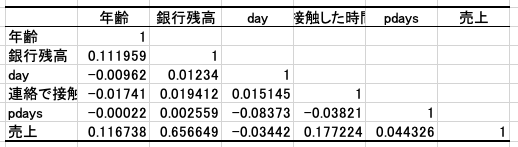
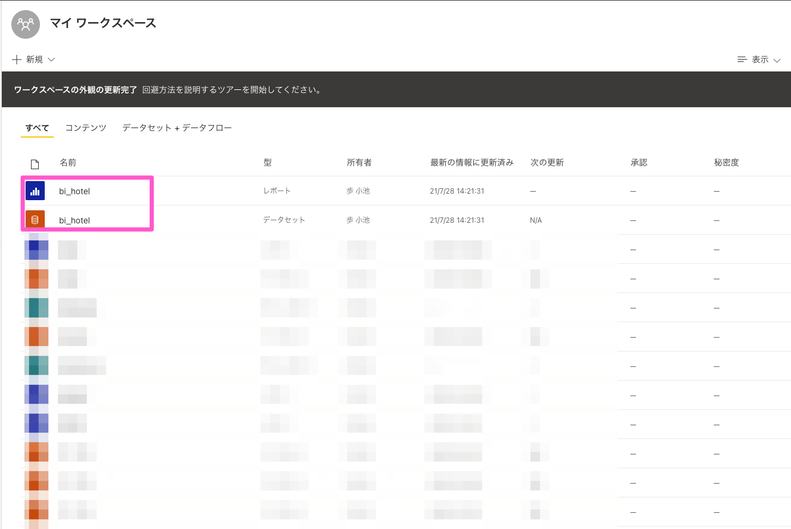
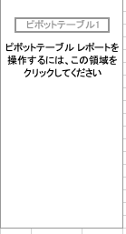
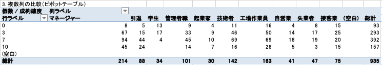

データの収集・探索的データ分析
ここでは、データの収集と整理を行い、収集されたデータの理解を深めます。グラフ化などは一部、分析プロセスデモ実施しますが、ここではデータの理解を目的として使用できます。
効率の良いデータ収集
本講座ではデモデータを用意していますが、実務においてはじめからデータが用意されていることは多くありません。データ収集の考え方として、集めやすいデータから集める方法があります。データは大きく一次データと二次データに分けられます。
一次データ: 目的に沿って新たに収集されるデータ。収集には時間とコストがかかります。例えば、分析の目的に合わせたアンケートデータなどです。
二次データ: 他の目的で既に収集されたデータ。具体的には、通常業務で収集された販売データや顧客データ、官公庁などの統計データ。必ずしも目的に適したデータではないため、加工や個人情報を含むデータの取り扱いには注意が必要です。
データは闇雲に収集してはいけません。先ほど紹介したイシューツリーを用いて、大枠の問題を頂点として、考えられる要因や仮説、それらを検証するデータを展開します。そして、データが絞り込まれてきたら、二次データのようにすぐに収集できるデータを優先して集めます。データソースは内部だけでなく、外部のデータも候補に入れます。全てのデータが揃わなくても、集まったデータで仮説の検証を始めます。
データの最適化
二次データを収集し分析しようとすると、そもそもデータが分析の目的で集められたものではないため、関係のないデータが混在しています。このようなデータは取捨選択する必要があります。
ポイント
必要最低限必要なデータよりも余裕をもたせる
検証・分析に必要なデータに絞り込むのではなく、幅を持たせます。分析や検証を行っていく中で、異なる切り口で分析をすることがあります。例えば、ある商品Aを分析する際、Aの販売データだけでなく、同じ系列や競合のデータを含めることで、より多角的な検証が可能になります。
必要に応じて異常値を取り除く
明らかに他のデータより値が大きい場合などは、異常値として取り除く必要があります。異常値は分析や検証においてマイナスの要因となる可能性があります。例えば、自然災害により集客ができなかった場合などの突然発生するインシデントによる異常値や、入力ミスによる異常値が含まれることがあります。異常値の分析が必要な場合もありますので、適宜判断が求められます。散布図にプロットすることで異常値を見つけやすくなります。また、外れ値除去の方法として3シグマ法などがあります・
データの理解をする
データの取捨選択と並行して、データの理解を進めます。収集したデータがどのようなものかわからなければ、分析や検証を行うことはできません。データは必要に応じてグラフ化したり、ピボットテーブルを作成することで、より理解を深めることができます。結果によっては新たな仮説を立てることもあります。
それでは、本講座で使用する銀行のデータを見てみましょう。
【実装】データを理解する
環境構築
配布された Excel ファイルを手元で展開してくらださい。以下のように複数のテーブルが定義された Excel ファイルを開きます。

データには、預金口座開設キャンペーンで営業を行った際の顧客・営業結果のデータが含まれています。「生データ」のテーブルを開き、まずはどのようなカラムが取得されているか確認しましょう。
データの全体像の理解
【復習・演習】代表値の算出
データの概要が理解できました。次に、データから情報を抽出しましょう。データから得られる情報として、平均値・中央値・最頻値があります。このようにデータ全体の特徴を数値で表したものを代表値と呼びます。
代表値の意味
Avarage): データの合計値をデータ数で割った値Mode): データの中で最も多く出現する値Median): データを小さい順に並べたときの中央に位置する値代表値を扱う際に重要なことは、データの特徴を表現する際に1つの代表値だけで判断しないことです。実際に確認してみましょう。
まず初めに、データから年齢、銀行残高の各種代表値を算出しましょう。「ワークシート_1_」のシートを開き、各セルに代表値を算出してください。
下記のように値が算出されているか確認しましょう。
例）=Avarage(年齢列)
年齢の代表値
平均値 41.92941176中央値 39最頻値 31銀行残高の代表値
平均値 1790.752941中央値 712最頻値 0
データから情報を得ることができましたが、これだけではデータの特徴や仮説を立てるのは難しいです。さらに集計や可視化を行い、データから情報を引き出しましょう。
【実装】集計 （単純集計）
データを集計し確認することにより、データの特徴や分布を定量的に確認できます。また、分析や施策を検討するうえでの軸となるデータを発見できます。
例: ある属性を持った顧客データが全体の 9 割を占める場合、残り 1 割のデータに対する施策を検討するより、9割のデータに対する施策を検討・実施する方が効果的と考えます。
データ分析の最初に、分析の成果物や対象物として最も重要度の高いデータから概要を確認します。まずは、成約確度の値を確認してみましょう。今回のデータには成約の確度の数値が含まれています。それぞれの値がどのくらい含まれているのか、頻度の集計を行いましょう。
COUNTIF関数を使用します。COUNTIF(範囲,条件) の様に値を渡します。
例）=COUNTIF(列,カウントする値)
うまく集計ができました。
【実装 1 : 5 分】
他の値の集計をしましょう。

結果を確認すると、成約確度は 3,7 といった値の顧客が多いことがわかりました。
【実装 2 : 15 分】
結婚状況や最終学歴、債務不履行など他の値の集計を行いましょう。
【確認】可視化：円グラフ
今回のようなデータを扱う際には、どのような値がどのような割合で含まれているかに注目することが多いです。また、データ分析では、結果を直感的に伝える必要があるため、可視化します。
今回は、成約確度と職業の割合をグラフで可視化します。
【実装手順】
先ほど算出した頻度の部分を選択して、「挿入」 → 「円グラフ」の順に進めます。
表示されている割合や実数値と、グラフの凡例が正しい事を確認してください。

*間違った列が表示される場合は表示されたグラフをダブルクリックし、データのスライスの設定やデータの選択を確認します。
【確認+実装】可視化
分割の割合が多く、解釈が難しい場合は分布を確認します。
グラフを使用し、データを特定の区間で区切り、その区間の個数や各区間でのばらつきを表示します。例えば、身長のような連続する値の分布を把握したい場合に適した可視化方法です。棒グラフやヒストグラムなど様々なグラフのタイプがあります。
集計結果の値を選択し、「挿入」→「棒グラフ」を選択します。 以下の画像のように選択をしてください。
作成したグラフが、以下の画像のように複数の列を参照している場合はグラフをダブルクリックし、データの選択を押してください。
データの範囲選択を行う際に以下のように設定します。
判例項目：頻度
横（項目）軸ラベル：成約確度の集計列の0~10値の場所を参照
設定後、「OK」ボタンを選択

画像のような棒グラフを作成できます。
【実装 3 : 15-20 分】
他の列の可視化を行い、単一列のデータから気づきを得ましょう。
どの列を可視化しても構いません
ピボットテーブルなどの複数列の比較はNG
実装2,3 から得られる気づきをメモ帳などにまとめてください。
【補足：ヒストグラム】
年齢の列を選択したままで、「挿入」 → 「ヒストグラム」を選択します。
ヒストグラムは、区間でデータを区切ります。身長で言えば、120〜130、140〜150のように区切るイメージです。この区間のことをbinと呼びます。ヒストグラムでは、bin の幅を調整することができます。
ここまでで以下のようなヒストグラムが作成できます。

「年齢の x 軸をダブルクリック」 → 「軸の書式設定」 → 「ビンの幅」を画像のように変更します。

＊実際のグラフと差異がでても無視して頂いて構いません。
画像のように年代ごとに可視化を行うことができました。データを見てみると、30代の顧客のデータが多いことがわかりました。
このようにデータを可視化し、理解を深めることで、分析の指針を決定することも可能です。フレームワークの都合上、先に仮説の設定を紹介しましたが、この段階でデータから仮説を考えることもできます。
まとめ
ここまで、データの代表値を確認し、可視化を行ってデータの概要を確認しました。ここまでの結果からわかることをまとめてみましょう。
例）データから分かること
データ数は〇〇サンプル
リストの平均年齢41歳
リストの平均残高1450.296ドル
ローンのない顧客が大半を占める
問）他に可視化の結果からどのようなことがわかるか書き出してみよう。
探索的データ分析
それぞれのデータを確認し、データの大枠の理解が進みました。次に、複数のデータをまとめたり、分解したりして、さらに理解を深めます。
さまざまな視点でデータを確認することで、新しい発見の可能性が高まります。集計・可視化をうまく使用すると、2 変数の関連性を理解することが可能です。
データの種類
2 変数の関連性を正しく理解するには、データの種類と尺度について理解している必要があります。ここまで何気なくデータを扱ってきましたが、データにはその種類に明確な区分が存在します。まずは全体像から確認しましょう。データは以下のように大きく、質的データと量的データに区別することができます。
質的データ:数値に直接置き換えることができないデータ。
名義尺度:性別のように順序に意味がない
順位尺度:満足度 (0,1,2) のように順序に意味がある
量的データ:量的データとは年齢や売上などのそのまま数値で取り扱えるデータ
間隔尺度:年齢のように、数値の間隔に意味がある
比例尺度:売上のように比率に意味があり、単純に「〇〇倍」のように表現できるもの
これらは見分けるのが難しいですが、コツとして数値に仮に置き換えて考えてみると良いです。例えば、性別において男性を 1、女性を 0 と置き換えて考えます。数値として扱うとこの 2 つには差が存在しますが、その差に厳密な意味はありません。それに対して、満足度を満足：1、普通：2、不満足：0 と置き換えた場合、この数値の差には意味が存在することが分かります。つまり、0〜2 の数値には順序の概念があります。データの種類の組み合わせによって、関連性の把握方法が異なります。
では、実際に今回のデータに対して、クロス集計を用いて関係性の把握を行いましょう。
【実装4 : 5 分】成約の確度と他の列の関係性を確認する
それでは、クロス集計を使用して、職業と成約確度の関係を見てみましょう。
Excel ではクロス集計を関数を使用して実装することも可能ですが、今回はピボットテーブルを使用します。
挿入タブからピボットテーブルを選択します。
データの範囲を選択します。テーブル全体を選択しましょう。「挿入」→「ピボットテーブル」を選択しピボットテーブルを作成します。ピボットテーブルの出力先はどちらでも構いません。

作成ができると上記画像のようにピボットテーブルが作成されます。
以下の図のように、列に職業、行に成約確度、値に成約確度の個数を選択します ＊デフォルトですと合計値が入力されるため、適宜画像のように個数に変更してください
クロス集計を行ったピボットテーブルの作成ができました。結果を確認してみましょう。

画像のようなピボットテーブルが作成できました。
【補足】
ピボットテーブルを可視化する場合には、棒グラフにすると関連性が分かりやすくなります。
1. 作成したピボットテーブルを選択した状態で、「挿入」 → 「棒グラフ」を選択します。
ワークシート_1_データの可視化のグラフのように可視化できていれば成功です。非常に簡単に可視化ができました。
【実装5: 15 分】成約の有無と他の列の関係性を確認する
以下の項目に関して関連性を見るためにピボットテーブルの作成や可視化を行ってみましょう。また、結果から気づいたことをまとめましょう。
成約確度 - 結婚状況
成約確度 - 最終学歴
【（例）気づき】
成約数の最も多いのはマネージャー
データ数に対して引退の成約確度が高そう
ここで得た気づきや仮説を検証するために分析手法や統計検定を用いて統計的な証明を行います。